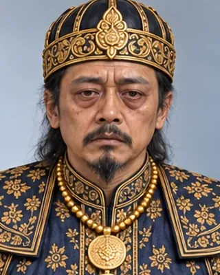

Suramphaa (Jayaditya Singha, Bhoga Roja)
সুৰম্ফা (ভোগা ৰজা)
1641–1644 · Eighteenth Ahom king

Son of Pratap Singha; deposed in 1644 and later murdered.
- Tai name
- Suramphaa
- Hindu name
- Jayaditya Singha
- Also called
- Bhoga Roja
- Family
- Son of Susenghphaa
- Fate
- Deposed, later murdered
Record confidence: medium.
Sources
Open interactive profile
Related scenes